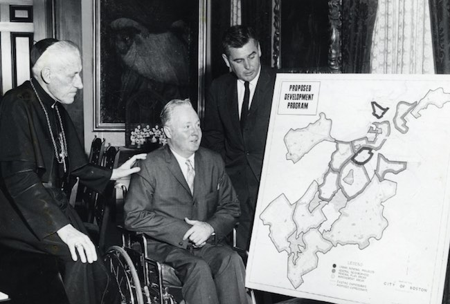

At a brand new public housing project, Pat McCluskey joins a tenants union,
the Mothers for Columbia Point, and tries to close a garbage dump next door.
Episode Two: "The New Boston"

While Ed Logue plans for the "urban renewal" of Boston, residents at Columbia
Point protest for basic improvements at the project, like a health care center.
Reading Series
Speakers read primary sources related to the podcast.
A People’s History is a documentary podcast about class struggle in the United
States. Inspired by sections from Howard Zinn's landmark book, each eight-episode season covers one
local story, told from the viewpoint of common people.
Qainat Khan grew up in Fresno, California. She is an independent reporter who
has produced news for WBUR's Morning Edition and currently is a digital
editor for GroundTruth at WGBH.
Conor Gillies grew up in Maine and studied history at Boston University. He
produces local politics and cultural programs for Radio Open Source. He
co-created Stylus, a WBUR miniseries about listening.
Alison Bruzek is a radio producer and science writer. She has worked on WBUR's
daily local news program, Radio Boston. She is also a co-creator of Trace Elements,
a PRX series about science.
Series edited by Ben Shapiro. Original music by Marisa Anderson and Liz Harris.
Education and research by Rosie Busiakiewicz. Web development by Alex Silva.
Sound design by Anna Cataldo. More credits TK.
There are other ways to support us. Tell your friends, or give us a good rating
on iTunes. You might also consider bringing A People's History Podcast
into your group or classroom. We offer a Season One syllabus TK,
with suggested actions and research questions for high-school students.